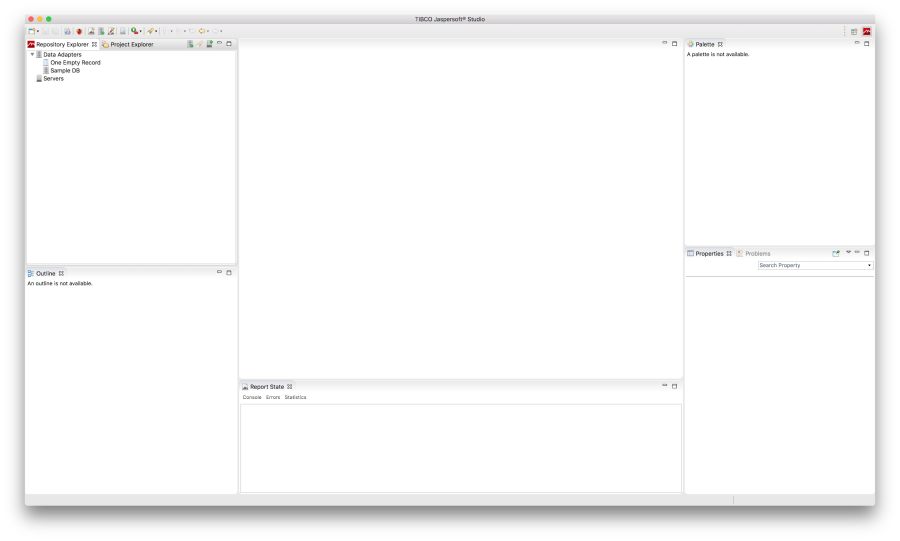
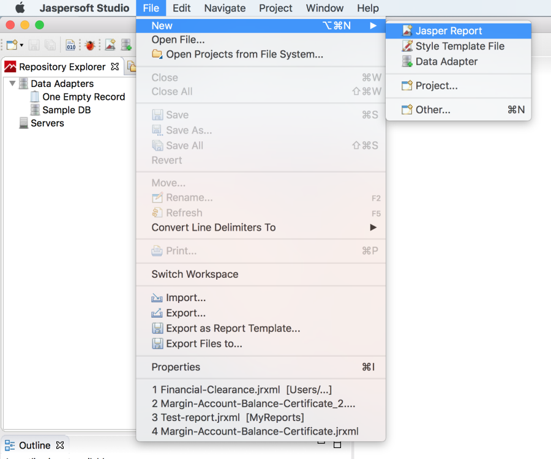
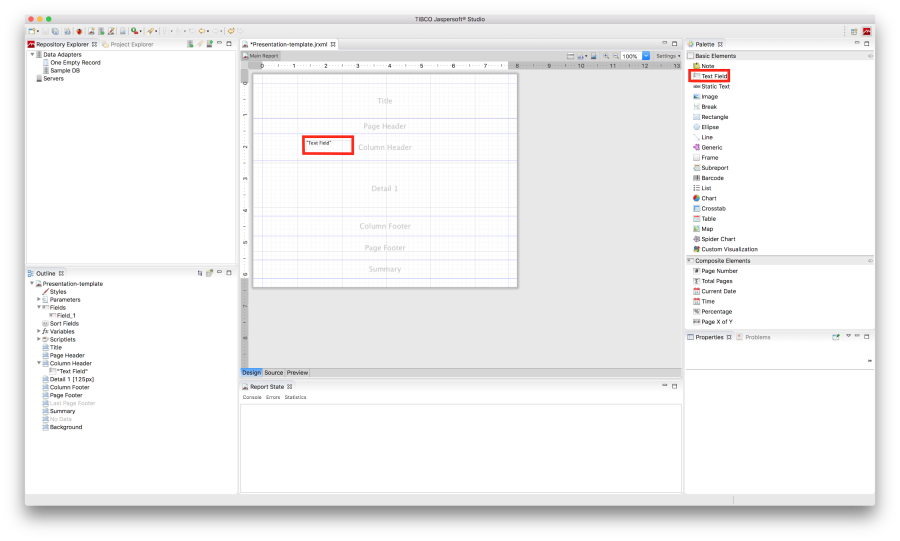
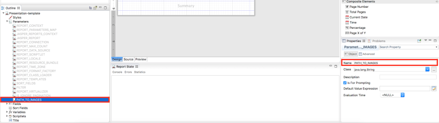
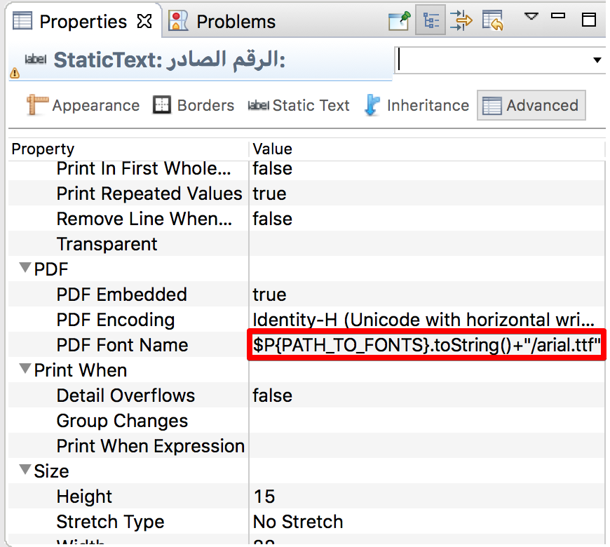
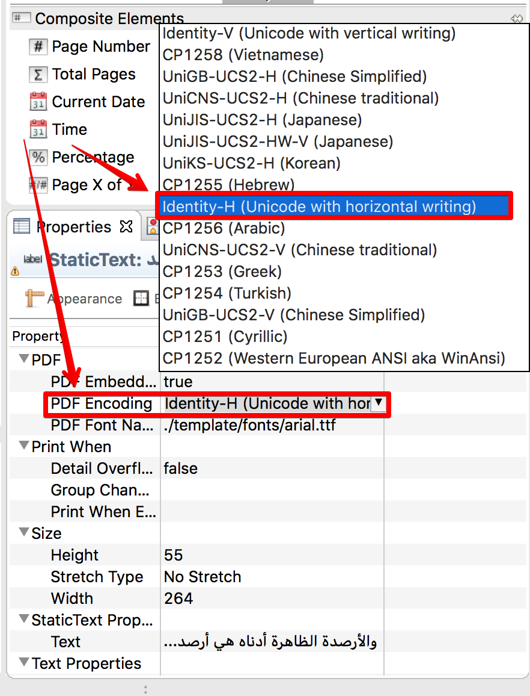

1. Download and install Jaspersoft Studio 6.6.0 using the link below:
https://community.jaspersoft.com/project/jaspersoft-studio/releases
2. Open Jaspersoft Studio and observe the screen;

3. Click on ‘File’ in
4. Click on ‘New’ in appeared dropdown menu;
5. Click on ‘Jasper Report’;

6. While creating a template use fields, images and other components which you can drag from ‘Palette’;

7. Fields can be used for dynamic information, you have to create new field and use this field as a variable for text field. To create a new field includes follow this steps:
a. Right click by mouse on element ‘Field’ in ‘Outline’ menu;
b. Click on menu item ‘Create Field’;

c. When the field is created, input a name of field and select data type in ‘Properties’ menu;

d. Drag ‘Text Field’ from ‘Palette’ onto the template;

e. Click on ‘Text Field’ within the template;
f. Choose tab ‘Text Field’ in ‘Properties’ menu;
g. Click on ‘Expression Editor’ button;

h. Select a field ‘Field_()’ in the list of fields in ‘Expression Editor’ window;

i. Click on ‘Finish’ button to finish field link.
8. Image components also can be inserted in a template while creating a new one. To insert the image follow next steps:
a. Drag ‘Image’ item from ‘Palette’ to template in place you would like;

b. After you dragged the ‘Image’ into template, ‘Create new image element’ windows will appear. Choose option ‘No image’;

c. Create new parameter by clicking ‘Parameters’ submenu in ‘Outline’ menu and selecting ‘Create Parameter’ option;

d. Rename newly created parameter to “PATH_TO_IMAGES”;

e. Click on dragged image and in tab “Image” click button “Expression Editor”

d. Find “PATH_TO_IMAGES” and add string to expression: .toString()+”/
where

9. Different custom fonts also can be used in a template while creating a new one. To use them, follow next steps:
a. Specify a parameter “pdfFontName” and assign a path to font to this variable which should looks like this pdfFontName=$P{PATH_TO_FONTS}.toString()+”/" where is an actual name of the font;
b. In order to use an Arabic fonts set ‘pdfEncoding’ property to ‘Identity-H’ value;

c. Set ‘pdfEmbedded’ property to ‘true’;
d. Put custom fonts in ZIP archive in the “template/fonts/”
10. When you finish creating the template, create an archive which will contain a template with .jrxml extension and images used by the template with names you specified in a template for “image” items. All images must be located in “template/img/” folder in archive, all fonts must be located in ‘template/fonts/’ folder in archive and archive file as a .zip.
11. Go to the Issuer site for Cronica.io and authorize as an Editor or Administrator
12. Click ‘New Template’

13. Observe as new fields appear;
14. Complete ‘Template Name’ with an appropriate name;
15. Upload .zip archive with a template into Attach File Field;
16. Complete ‘Name’ and ‘System Name’ fields for a variables, according to number of variables used in template, counting ‘Name’ as a name of field displayed to users, when they will creating a documents, counting ‘System Name’ - as a field named in template;
17. Complete all needed fields and click ‘Submit’ button.
18. Observe as newly created template appears in templates list on ‘New Document’ screen